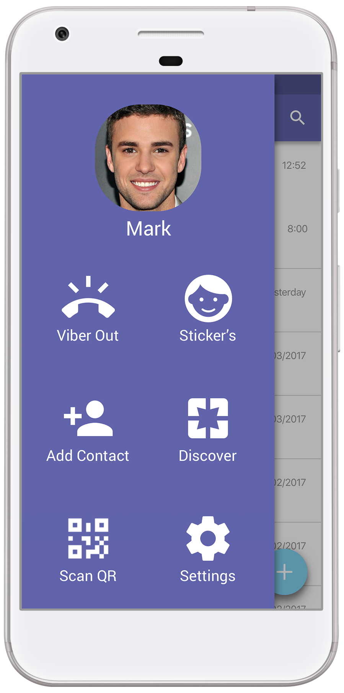
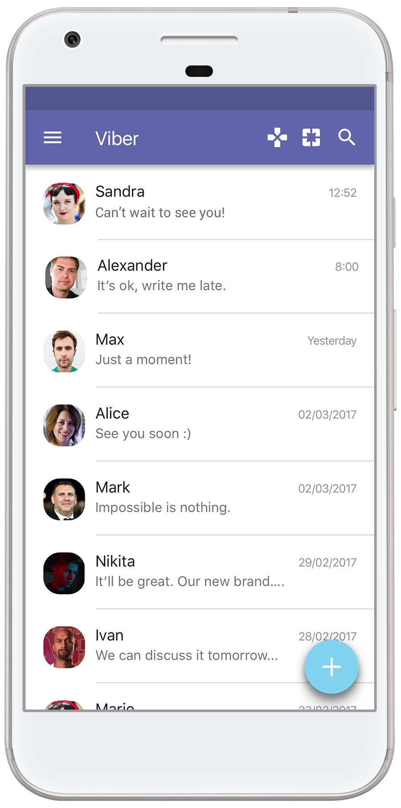
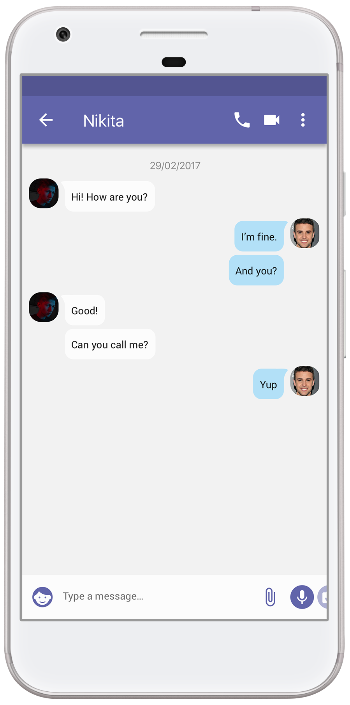
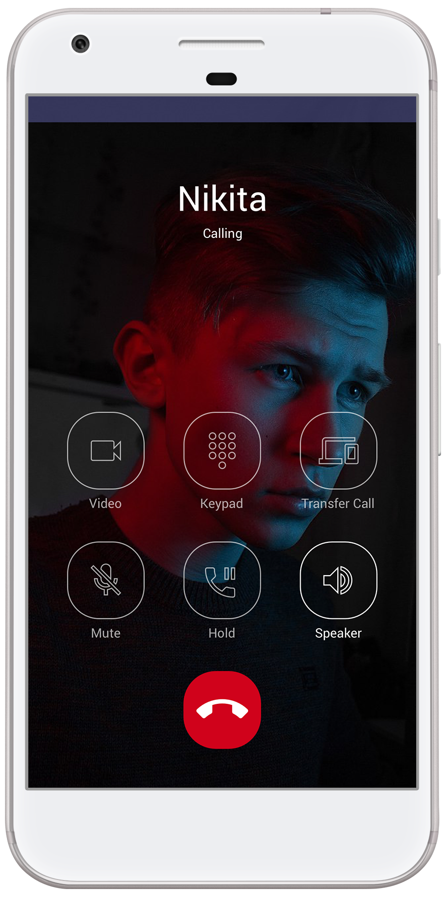
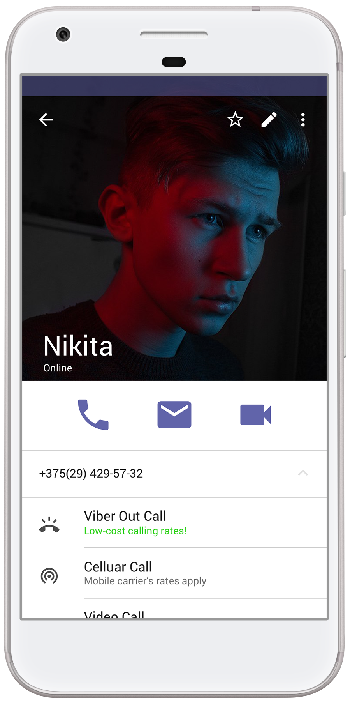
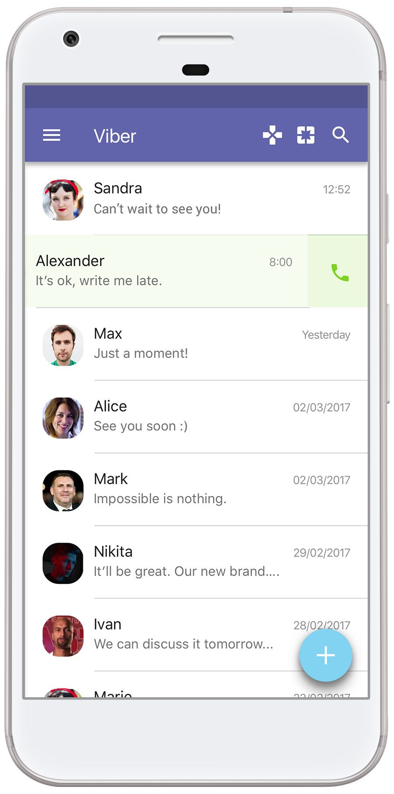

Main Screens.



Primary color application turquoise. It was chosen because it is non-irritating and soothing color. Almost all of the functions available in the application with two clicks, it makes easier to use the application.
For all the SmartThings you can schedule and they will work automatically.
All under Control.



Also, smart home supports voice control. Therefore, while the user is at home, he can control SmartThings with your voice. The application interface only complements the system. The graphic interface is used when a user is outside his the home want to plan cleanin or washing etc.